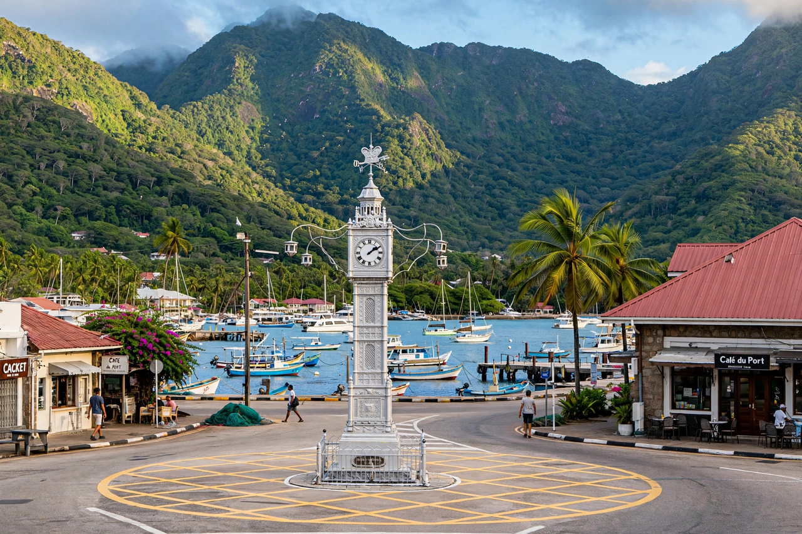

Wikipedia — the free encyclopedia
| Country | Seychelles |
| Island | Mahé |
| Status | Capital city |
| Population | About 25,000–30,000 (estimate) |

Victoria is the capital city of the Seychelles, located on the northeastern side of Mahé, the archipelago's largest island. It is one of the smallest capital cities in the world, home to roughly a quarter of the country's population.
The site was first developed by French settlers from 1778 as L'Établissement du Roi and was renamed Port Victoria by the British, in honour of Queen Victoria, after they took possession of the islands in the early 19th century. Its most famous landmark is the Victoria Clock Tower of 1903 — often called 'Little Ben' — modelled on the clock tower at Vauxhall in London and standing at the city's main roundabout.
Landmarks include the colourful Sir Selwyn Selwyn-Clarke Market, the arched Hindu temple (Arul Mihu Navasakthi Vinayagar), the Natural History Museum, and the botanical gardens, home to giant Aldabra tortoises and coco de mer palms. The port handles most of Seychelles' trade and its tuna fleet; the inner islands are reached by ferry from the inter-island quay.